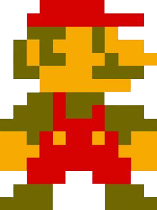

Historia


Super Mario Bros. fue el juego que popularizó al personaje de Mario, convirtiéndolo en el ícono principal de Nintendo, y uno de los personajes más reconocidos de los videojuegos, así como su hermano menor Luigi. Además, presentó por primera vez a la Princesa Peach Toadstool, Toad, Bowser, entre otros personajes. Este juego es considerado el primer videojuego de plataformas de desplazamiento lateral de Nintendo y se ha convertido en un hito debido a la trascendencia de su diseño y papel en la industria de los videojuegos. Su lanzamiento fue el primer gran récord de ventas posterior a la crisis de la industria de los videojuegos de 1983 (alcanzando más de 10 millones de cartuchos vendidos), por lo que popularizó, en cierta manera, a la consola NES. En 1999 fue reconocido como uno de los videojuegos más vendidos de todos los tiempos. Shigeru Miyamoto, su creador, relata la existencia de Super Mario Bros. debido a que cuando viajaba en un tren le gustaba mirar por la ventana, y se imaginaba que estaba allí saltando afuera. Debido a la popularidad de Mario, se encuentra también en otros videojuegos como el original Donkey Kong y Super Smash Bros. Tras su éxito comercial, tuvo una secuela directa, conocida en fuera de Japón como Super Mario Bros.: The Lost Levels, ya que en occidente se comercializó como la secuela directa una variación de otro juego en el que había participado Miyamoto, Yume Koujou Doki Doki Panic!, debido a que se consideró la versión lanzada en Japón como demasiado difícil. Tuvo también una variedad de versiones «alternas», como All Night Nippon Super Mario Bros., así como adaptaciones a arcade, películas y series de televisión.
Niveles
El juego consta de 8 mundos con 4 niveles cada uno —mostrándose como nivel 1-1, 1-2, 1-3, 1-4, 2-1 y así sucesivamente hasta llegar al 8-4—. Cada nivel es diferente, al igual que su banda sonora. Hay cuatro estilos diferentes de mundos: el principal es el del Reino Champiñón, lleno de bloques de ladrillos o setas gigantes, y pueden ser tanto de día o de noche; niveles subterráneos, a los que se accede a través de tuberías; niveles acuáticos, los cuales deben ser cruzados nadando; y castillos, que son todos los cuartos niveles. Al final de los niveles 1, 2 o 3 de cada mundo hay un asta blanca con una bandera verde en la cual Mario o Luigi deben bajar la bandera para poder acceder al siguiente nivel. Para hacerlo cuentan con un límite de tiempo. A veces, cuando se llega a la bandera en un momento determinado, se lanzan fuegos artificiales. El objetivo es llegar al cuarto nivel de cada mundo, es decir, al castillo. Algunos castillos son laberintos, por lo que Mario o Luigi deben descifrar el patrón correcto para poder avanzar, de no ser así, el laberinto se repetirá hasta haber encontrado el patrón correcto. Al final de cada castillo, Mario o Luigi debe enfrentarse a Bowser. Si uno de ellos lanza cinco balazos sobre él, se descubre que en realidad era solo un disfraz, y el verdadero se encuentra en otra parte. A partir del mundo 6, el Rey Koopa lanza martillos y a su vez fuego. Hay otra manera de derrotarlo: al final del puente donde se encuentra Bowser hay un hacha, que al tocarla corta las cuerdas del puente, haciendo caer a Bowser en la lava. Cuando llega al nivel 8-4, Mario se encuentra dentro de un castillo, como los primeros, en forma de laberinto. Al pasar dicho laberinto, se encuentra nuevamente con Rey Koopa, que lanza bolas de fuego y martillos. De manera similar a las anteriores, se le vence de las dos formas posibles. Luego de derrotarlo, Mario avanza hacia el lugar en donde en las fases anteriores se encontraba con Toad, aunque esta vez aparece la Princesa Peach diciendo «¡Gracias Mario [o Luigi]! Tu búsqueda ha terminado. Te presento una nueva búsqueda. Presiona B para seleccionar un mundo». Tras ganar el juego, el jugador tiene la opción de reiniciarlo, pero en modo difícil, donde todos los Goombas son reemplazados por Buzzy Beetles (que son como los Koopa Troopa pero que no pueden ser derrotados con bolas de fuego) y todos los enemigos aumentan su velocidad. Además, los elevadores se reducen de tamaño. Hay también un número creciente de peligros en los mundos. Por ejemplo, en el mundo 1-3 aparecen las balas de cañón que vuelan a través de la pantalla, las cuales normalmente no aparecen hasta más adelante, como en el mundo 5-3.
Puntuaciones otorgadas al juego
| Editorial/Web | Puntuacion | Version |
|---|---|---|
| Edge | 10/10 | Famicom |
| Allgame | 10/10 | NES |
| IGN | 10/10 | GBC |
| Gamespot | 9.9/10 | GBC |
| GamePro | 4,5/5 | GBA |
| Metacritic | 84/100 | GBA |
| Eurogamer | 5/5 | Wii-CV |
| GameSpot | 8,3/10 | Wii-CV |
| Nintendo Life | 9/10 | 3DS-CV |
| Nintendo-Online | 7/10 | Wii U-CV |